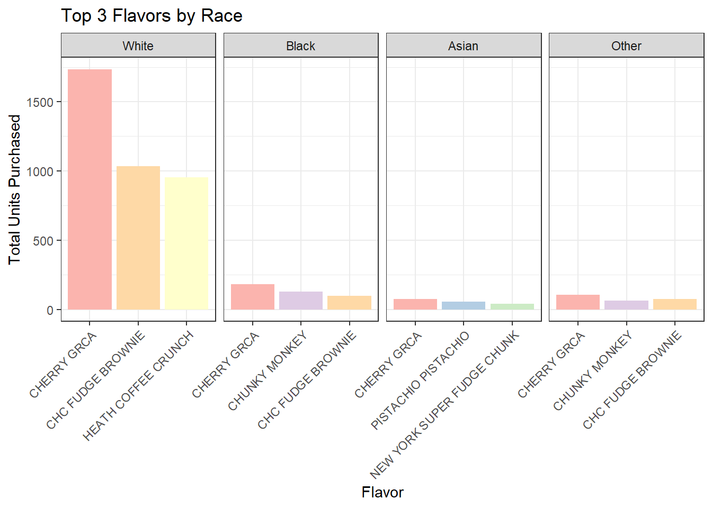

library(tidyverse)
library(skimr)
library(dplyr)
library(ggplot2)
ice_cream <- read_csv('https://bcdanl.github.io/data/ben-and-jerry-cleaned.csv')Introduction to the Dataset
skim(ice_cream)| Name | ice_cream |
| Number of rows | 21974 |
| Number of columns | 17 |
| _______________________ | |
| Column type frequency: | |
| character | 4 |
| logical | 8 |
| numeric | 5 |
| ________________________ | |
| Group variables | None |
Variable type: character
| skim_variable | n_missing | complete_rate | min | max | empty | n_unique | whitespace |
|---|---|---|---|---|---|---|---|
| flavor_descr | 0 | 1 | 3 | 30 | 0 | 50 | 0 |
| size1_descr | 0 | 1 | 9 | 9 | 0 | 2 | 0 |
| region | 0 | 1 | 4 | 7 | 0 | 4 | 0 |
| race | 0 | 1 | 5 | 5 | 0 | 4 | 0 |
Variable type: logical
| skim_variable | n_missing | complete_rate | mean | count |
|---|---|---|---|---|
| usecoup | 0 | 1 | 0.11 | FAL: 19629, TRU: 2345 |
| married | 0 | 1 | 0.60 | TRU: 13276, FAL: 8698 |
| hispanic_origin | 0 | 1 | 0.05 | FAL: 20919, TRU: 1055 |
| microwave | 0 | 1 | 0.98 | TRU: 21567, FAL: 407 |
| dishwasher | 0 | 1 | 0.77 | TRU: 16983, FAL: 4991 |
| sfh | 0 | 1 | 0.73 | TRU: 16076, FAL: 5898 |
| internet | 0 | 1 | 0.84 | TRU: 18529, FAL: 3445 |
| tvcable | 34 | 1 | 0.64 | TRU: 13954, FAL: 7986 |
Variable type: numeric
| skim_variable | n_missing | complete_rate | mean | sd | p0 | p25 | p50 | p75 | p100 | hist |
|---|---|---|---|---|---|---|---|---|---|---|
| priceper1 | 0 | 1 | 3.31 | 0.67 | 0 | 3 | 3.34 | 3.59 | 9.48 | ▁▇▂▁▁ |
| household_id | 0 | 1 | 16612005.04 | 11685954.46 | 2000358 | 8142253 | 8401573.00 | 30183891.00 | 30440689.00 | ▂▇▁▁▇ |
| household_income | 0 | 1 | 125290.80 | 57188.36 | 40000 | 80000 | 110000.00 | 170000.00 | 310000.00 | ▇▃▅▂▁ |
| household_size | 0 | 1 | 2.46 | 1.34 | 1 | 2 | 2.00 | 3.00 | 9.00 | ▇▃▁▁▁ |
| couponper1 | 0 | 1 | 0.13 | 0.52 | 0 | 0 | 0.00 | 0.00 | 8.98 | ▇▁▁▁▁ |
Customer Demographics: Frequent vs. Infrequent Buyers
customer_demo <- ice_cream |>
select(household_id, household_income, household_size, flavor_descr,region,race, tvcable) |>
add_count(household_id, name = "purchase_freq") |>
mutate(household_size = as.factor(household_size),
customer_type = if_else(purchase_freq >=10, "Frequent", "Infrequent")) |>
filter(!is.na(tvcable))Customer’s Household Size and TV Cable
ggplot(customer_demo,
aes(x = household_size)) +
geom_bar(position = "dodge2",
aes(fill = tvcable)) +
facet_wrap(~customer_type) +
scale_fill_manual(values = c("#FFAD14", "#000000"))+
scale_x_discrete(name = "Household Size") +
scale_y_continuous(
expand = c(0, 0),
name = "Total Ice Cream Purchased") +
theme_bw()
Although infrequent customers are more common than frequent customers, they both share similar patterns regarding their household size and whether they have tv cable or not. Household sizes of 1-2 tend to purchase more Ben and Jerry’s ice cream. In the case of all infrequent customers, customers tend to purchase more ice cream while owning cable. A majority of frequent customers also tend to own cable, however, the larger household sizes have a greater number of customers who do not own cable compared to those who do.
Top 3 Flavors by Race
ice_cream$race <- str_to_title(ice_cream$race)top_3 <- ice_cream |>
group_by(race, flavor_descr) |>
summarize(n_purchased = n(), .groups = 'drop') |>
group_by(race) |>
arrange(race, desc(n_purchased)) |>
slice_head(n = 3) |>
ungroup()
top_3 <- top_3 |>
mutate(flavor_descr = factor(flavor_descr,
levels = top_3 |>
group_by(race) |>
arrange(race, desc(n_purchased)) |>
pull(flavor_descr) |>
unique()))
top_3$race <- top_3$race |>
str_to_title() |>
factor(levels = c("White", "Black", "Asian", "Other"))ggplot(top_3,
aes( x = flavor_descr,
y = n_purchased)) +
geom_bar(stat = "identity",
aes(fill = flavor_descr)) +
facet_wrap(~race,
scales = "free_x",
nrow = 1) +
labs(title = "Top 3 Flavors by Race")+
xlab("Flavor")+
ylab("Total Units Purchased")+
theme_bw()+
theme(
legend.position = 'none',
axis.text.x = element_text(angle = 45, hjust = 1)
) +
scale_fill_brewer(palette = "Pastel1")
Cherry Garcia is the most popular flavor among all races.